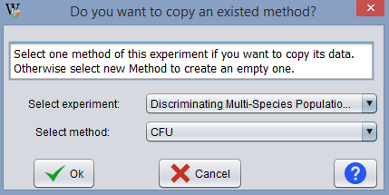
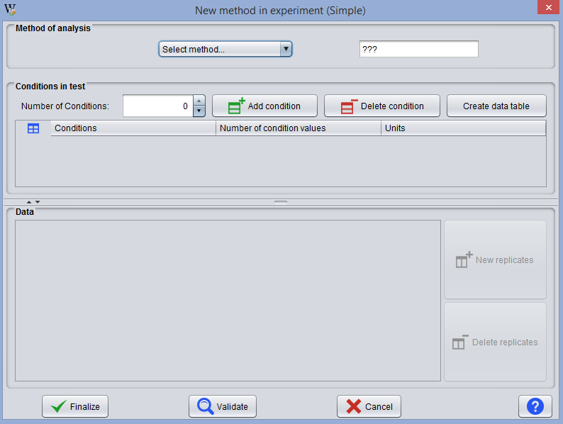
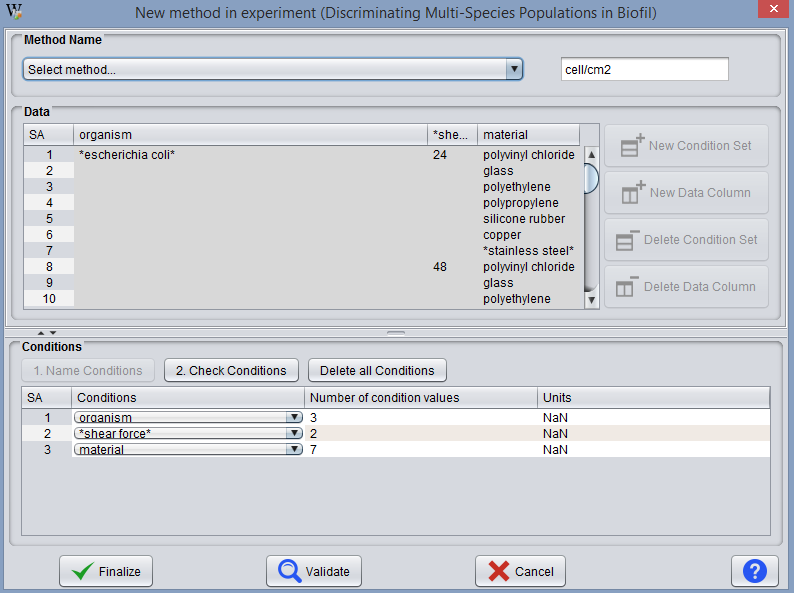

This operation allows the user to add a method to an existing experiment.
When the user executes this operation an initial dialog displays the following message:

The user can choose if he wants to create a new empty method or copy an existing one from the same experiment. That is:
In the method field, the user must select "New empty method". The window presented has no contents, requiring that the user covers all data fields. Its use is recommended if the user wants to create a completely new method (e.g. one testing a different set of conditions or condition values).

The window shows the same conditions and values of condition as the copied method. The user only has to enter new data or make any desired modifications. Its use is recommended if the user wants to quantify the same tests in different ways or wants to make small modifications to the set of conditions, or conditions values, tested.

The way to create a new empty method is explained in the section about creating an experiment.
The way to copy a method is explained in the section about importing an experiment.